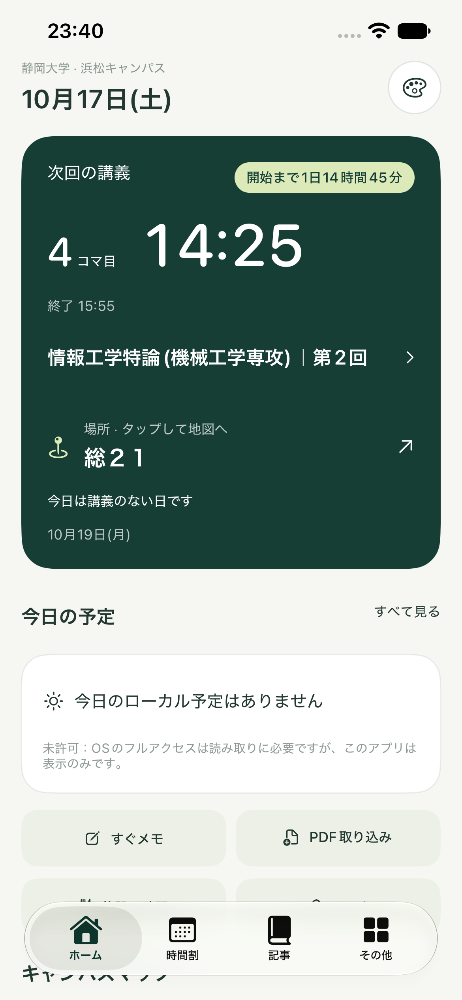
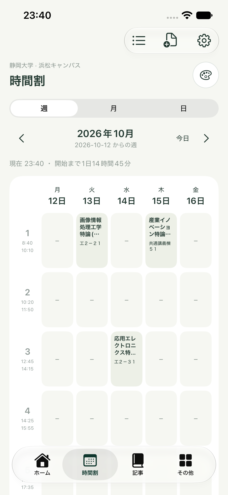
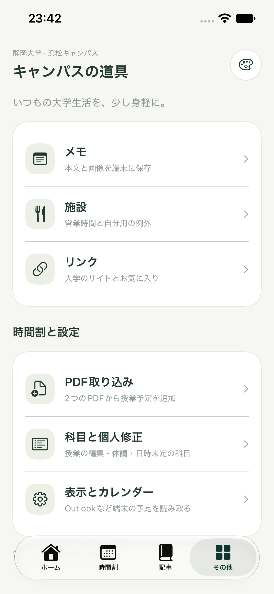
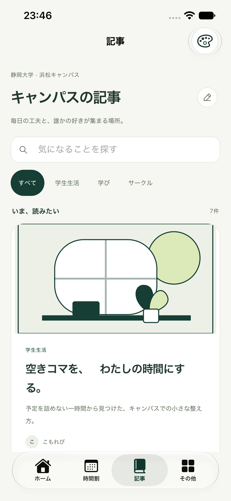
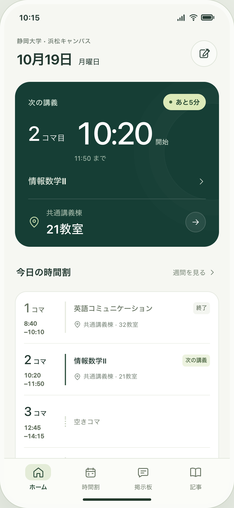
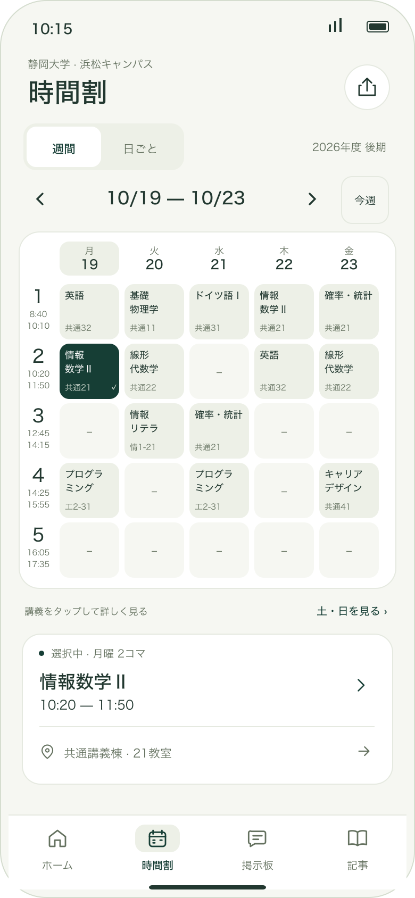

更新したiPhoneアプリ
実際のシミュレーターで確認した画面です。ホーム・時間割・補助画面の統一、記事への往復、再起動後のテーマ保持、2台の保存データ保持を確認しました。Core25件・記事回帰・ビルドと独立レビューはPASS。実機IME・VoiceOver・文字拡大全サイズの未確認事項は正本に記載しています。




全体の構成
起動すると新しいホームが開き、次の講義の時刻と教室をすぐ確認できます。時間割は週間の講義を見渡せるカードへ。記事とその他の道具も同じ色・余白でつなぎます。実際の予定・メモ・画像を引き継ぎます。
ホーム → 時間割 → 記事 → その他（メモ・施設・リンク）。地図・PDF取り込み・予定の編集も既存の機能を維持します。
開いた瞬間に、次の時刻と場所が分かる。
開始時刻・教室を主役にしたホーム。講義前・講義中・終了・未取込を実データから判断します。

週間をすっきり見渡せる時間割。
平日5列のカード、時限・時刻・教室。週/月/日移動と土日・時間外・重複の確認を維持します。

いつもの機能が、共通の入口にまとまる。
ホーム・時間割・記事・その他の4入口。メモ・施設・リンクや地図へ迷わず進めます。
編集画面まで同じ雰囲気に。
メモ・施設・リンク・PDF・講義詳細や設定にもカード、背景、文字組みを適用。既存の入力・取消・保存失敗の案内を維持します。
選んだテーマが、アプリ全体へ広がる。
グリーン・ブルー・ローズ・モノトーン。ホームと時間割から記事まで共通にし、再起動後も引き継ぎます。
小さい画面でも、文字を大きくしても使える。
44ptの操作領域、状態の文字表示、VoiceOverラベル。必要なスクロールや日一覧で、予定への入口を確保します。
今ある予定とメモを、そのまま使う。
見た目の更新で保存形式やPDF解析を変更しません。予定・メモ・画像・下書きを維持し、モックの仮データで置き換えません。
開き直しても、新しいホームへ。
既存アプリを同じ識別子で更新。保存データを退避・照合し、2台の利用中Simulatorで同じビルドに揃えます。
既存の保存データと機能を維持するデザイン更新です。
公開掲示板やサーバー、認証の追加、PDF解析・外部予定の書き込み方針の変更は含めません。
確認すること
- R1–R2: 新ホームと時間割の見た目、実データと状態の一致。
- R3–R5: すべての入口、テーマ同期・保存、補助画面の統一。
- R6–R7: 保存/既存機能の回帰と狭幅・文字拡大・操作ラベル。
- R8: 同じ本体アプリの更新と再起動後の表示。
未解決事項
着手を止める事項はありません。実機固有の未確認操作は検証結果と分けて記録します。
関連資料
全体仕様・承認・検証 · ホーム · 時間割 · 記事